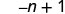

પૂર્ણાંકોનો ગુણાકાર કરો
5ને 3 વખત ઉમેરો.
15 ધન ચકતીઓ
−5ને 3 વખત ઉમેરો.
15 ઋણ ચકતીઓ
બે ચિત્રો બાજુબાજુ છે. ડાબા ચિત્રની ઉપર 5 · 3 છે. નીચે ‘5ને 3 વખત ઉમેરો’ લખેલું છે. પછી વાદળી ચકતીઓની ત્રણ હરોળ છે, દરેકમાં પાંચ ચકતીઓ છે. નીચે ‘15 ધન ચકતીઓ’ અને પછી 5 · 3 = 15 છે. જમણા ચિત્રની ઉપર −5(3) છે. નીચે ‘−5ને 3 વખત ઉમેરો’ લખેલું છે. પછી પાંચ-પાંચ લાલ ચકતીઓની ત્રણ હરોળમાં કુલ પંદર લાલ ચકતીઓ છે. નીચે ‘15 ઋણ ચકતીઓ’ અને પછી −5(3) = −15 છે.
5ને 3 વખત દૂર કરો.
શું બાકી રહ્યું?
15 ઋણ ચકતીઓ
−5ને 3 વખત દૂર કરો.
શું બાકી રહ્યું?
15 ધન ચકતીઓ
આકૃતિમાં બે સ્તંભ છે. ઉપર ડાબે 5 × (−3) છે; તેનો અર્થ 5ને ત્રણ વખત દૂર કરવો. નીચે પાંચ-પાંચ લાલ ઋણ ચકતીઓનાં ત્રણ જૂથ છે અને દરેકની નીચે પાંચ વાદળી ધન ચકતીઓનું જૂથ છે. પંદર લાલ ચકતીઓથી દર્શાવેલી 15 ઋણ ચકતીઓ બાકી રહે છે. નીચે 5 × (−3) = −15 છે. ઉપર જમણે −5 × (−3) છે; તેનો અર્થ −5ને ત્રણ વખત દૂર કરવો. નીચે પાંચ-પાંચ વાદળી ધન ચકતીઓનાં ત્રણ જૂથ છે અને દરેકની નીચે પાંચ લાલ ઋણ ચકતીઓનું જૂથ છે. પંદર વાદળી ચકતીઓથી દર્શાવેલી 15 ધન ચકતીઓ બાકી રહે છે. નીચે −5 × (−3) = 15 છે.
- ચિહ્નો સમાન હોય ત્યારે ગુણાકારનું પરિણામ ધન છે.
- ચિહ્નો જુદાં હોય ત્યારે ગુણાકારનું પરિણામ ઋણ છે.
ચિહ્નવાળી સંખ્યાઓનો ગુણાકાર
| સમાન ચિહ્નો | ગુણાકારનું પરિણામ | ઉદાહરણ |
|---|---|---|
| બંને ધન બંને ઋણ |
ધન ધન |
| જુદાં ચિહ્નો | ગુણાકારનું પરિણામ | ઉદાહરણ |
|---|---|---|
| ધન · ઋણ ઋણ · ધન |
ઋણ ઋણ |
ઉકેલ
| ⓐ ગુણાકાર કરો. ચિહ્નો જુદાં હોવાથી પરિણામ ઋણ છે. |
|
| ⓑ ગુણાકાર કરો. ચિહ્નો સમાન હોવાથી પરિણામ ધન છે. |
|
| ⓒ જુદાં ચિહ્નો સાથે ગુણાકાર કરો. |
|
| ⓓ સમાન ચિહ્નો સાથે ગુણાકાર કરો. |
આ સંખ્યા વડે ગુણાકાર:
ઉકેલ
| ⓐ ગુણાકાર કરો. ચિહ્નો જુદાં હોવાથી પરિણામ ઋણ છે. |
|
| ⓑ ગુણાકાર કરો. ચિહ્નો સમાન હોવાથી પરિણામ ધન છે. |
પૂર્ણાંકોનો ભાગાકાર કરો
- ચિહ્નો સમાન હોય ત્યારે ભાગફળ ધન છે.
- ચિહ્નો જુદાં હોય ત્યારે ભાગફળ ઋણ છે.
ચિહ્નવાળી સંખ્યાઓનો ગુણાકાર અને ભાગાકાર
- ચિહ્નો સમાન હોય તો પરિણામ ધન છે.
- ચિહ્નો જુદાં હોય તો પરિણામ ઋણ છે.
| સમાન ચિહ્નો | પરિણામ |
|---|---|
| બંને ધન બંને ઋણ |
ધન ધન |
| ચિહ્નો સમાન હોય તો પરિણામ ધન છે. |
| જુદાં ચિહ્નો | પરિણામ |
|---|---|
| ધન અને ઋણ ઋણ અને ધન |
ઋણ ઋણ |
| ચિહ્નો જુદાં હોય તો પરિણામ ઋણ છે. |
ઉકેલ
| ⓐ ભાગાકાર કરો. ચિહ્નો જુદાં હોય ત્યારે ભાગફળ ઋણ છે. |
|
| ⓑ ભાગાકાર કરો. ચિહ્નો સમાન હોય ત્યારે ભાગફળ ધન છે. |
પૂર્ણાંકોવાળી પદાવલીઓને સરળ બનાવો
ઉકેલ
| પહેલાં ગુણાકાર કરો. | |
| સરવાળો કરો. | |
| બાદબાકી કરો. |
ઉકેલ
| ⓐ
ગુણાકારના વિસ્તારરૂપે લખો. ગુણાકાર કરો. ગુણાકાર કરો. ગુણાકાર કરો. |
|
| ⓑ
ગુણાકારના વિસ્તારરૂપે લખો. આપણે આ સંખ્યાની વિરોધી સંખ્યા શોધવાની છે: ગુણાકાર કરો. ગુણાકાર કરો. ગુણાકાર કરો. |
ઉકેલ
| પહેલાં ગોળ કૌંસની અંદર બાદબાકી કરો. | |
| ગુણાકાર કરો. | |
| બાદબાકી કરો. |
ઉકેલ
| પહેલાં ઘાતની કિંમત શોધો. | |
| ગુણાકાર કરો. | |
| ભાગાકાર કરો. |
ઉકેલ
| ગુણાકાર અને ભાગાકાર ડાબેથી જમણે કરો, તેથી પહેલાં ભાગાકાર કરો. | |
| ગુણાકાર કરો. | |
| સરવાળો કરો. |
પૂર્ણાંકોવાળી ચલ પદાવલીઓની કિંમત શોધો
ઉકેલ
 n + 1 પદાવલીમાં ચલ nમાં એક ઉમેરેલો છે. ગણિત અને કમ્પ્યુટર વિજ્ઞાનમાં આ સંકેતલિપિનો ઉપયોગ ઘણી વાર n પછીનો પૂર્ણાંક, એટલે તેનો અનુગામી, દર્શાવવા માટે થાય છે. |
|
ની જગ્યાએ મૂકો. nની જગ્યાએ −5 મૂકો. |
 પદાવલી −5 + 1 છે. ઋણ ચિહ્ન અને 5 લાલ રંગમાં છે; સરવાળાનું ચિહ્ન અને 1 કાળા રંગમાં છે. |
| સરળ બનાવો. | −4 |
 સફેદ પૃષ્ઠભૂમિ પર પદાવલી −n + 1 છે. |
|
ની જગ્યાએ મૂકો. સફેદ પૃષ્ઠભૂમિ પર ‘nની જગ્યાએ −5 મૂકો’ સૂચના છે. −5 લાલ રંગમાં અને બાકીનું લખાણ કાળા રંગમાં છે. |
 ગાણિતિક પદાવલી −(−5) + 1 છે. |
| સરળ બનાવો. |  સફેદ પૃષ્ઠભૂમિ પર કાળા રંગમાં પદાવલી 5 + 1 છે. |
| સરવાળો કરો. | 6 |
ઉકેલ
 દ્વિપદી x + y ગોળ કૌંસમાં છે અને આખા કૌંસની ઘાત 2 છે, એટલે (x + y)². |
|
ની જગ્યાએ અને ની જગ્યાએ મૂકો. ચિત્રમાં ‘xની જગ્યાએ −18 અને yની જગ્યાએ 24 મૂકો’ લખેલું છે. −18 લાલ અને 24 આછા વાદળી રંગમાં છે; તે ચલોની આપેલી કિંમતો દર્શાવે છે. |
 ચિત્રમાં પદાવલી (−18 + 24)² છે. −18 લાલ રંગમાં, 24 આછા વાદળી રંગમાં અને બાકીનું લખાણ કાળા રંગમાં છે. |
| ગોળ કૌંસની અંદર સરવાળો કરો. | (6) 2 |
| સરળ બનાવો. | 36 |
ઉકેલ
 સફેદ પૃષ્ઠભૂમિ પર ઘાટા અક્ષરોમાં પદાવલી 20 − z છે, એટલે વીસ ઓછા z. |
|
ની જગ્યાએ મૂકો. ચિત્રમાં ‘zની જગ્યાએ 12 મૂકો’ લખેલું છે. 12 લાલ રંગમાં છે; બાકીનું લખાણ કાળા રંગમાં છે. |
 ચિત્રમાં પદાવલી 20 − 12 છે. માત્ર 12 લાલ રંગમાં છે; 20 અને બાદબાકીનું ચિહ્ન કાળા રંગમાં છે. |
| બાદબાકી કરો. | 8 |
ⓑ
સફેદ પૃષ્ઠભૂમિ પર પદાવલી 20 − z છે. |
|
ની જગ્યાએ મૂકો. ચિત્રમાં ‘zની જગ્યાએ −12 મૂકો’ સૂચના છે. −12 લાલ-નારંગી રંગમાં દર્શાવેલું છે. |
પદાવલી 20 − (−12) છે. −12 લાલ રંગમાં છે. આ ઋણ સંખ્યાની બાદબાકી દર્શાવે છે, જે 20 + 12ની સમકક્ષ છે. |
| બાદબાકી કરો. | 32 |
ઉકેલ
 પદાવલી 2x² + 3x + 8 છે; પહેલા પદમાં 2 ગુણ્યા xનો વર્ગ છે. |
|
| આપેલી કિંમત મૂકો. |  પદાવલી 2(4)² + 3(4) + 8 છે. ગોળ કૌંસમાં આવતો દરેક 4 લાલ રંગમાં છે. પહેલા પદમાં વર્ગ માત્ર કૌંસમાંના 4નો છે. |
| ઘાતની કિંમત શોધો. |  પદાવલી 2(16) + 3(4) + 8 છે, એટલે 2 ગુણ્યા 16, વત્તા 3 ગુણ્યા 4, વત્તા 8. |
| ગુણાકાર કરો. | ત્રણ સંખ્યાઓનો સરવાળો દર્શાવતી પદાવલી 32 + 12 + 8 છે. |
| સરવાળો કરો. | 52 |
શબ્દસમૂહોને પૂર્ણાંકોવાળી પદાવલીઓમાં ફેરવો
ઉકેલ
| આ સંખ્યાઓનો સરવાળો લો: 8 અને પછી તેમાં 3 ઉમેરો. | |
| પદાવલીમાં ફેરવો. | |
| સરળ બનાવો. ચોરસ કૌંસને નિરપેક્ષ મૂલ્યની ઊભી રેખાઓ સાથે ગૂંચવશો નહીં. | |
| સરવાળો કરો. |
| ઓછા તફાવત: અને નો તફાવત ને આમાંથી બાદ કરેલું: જેટલું આ કરતાં ઓછું: |
ઉકેલ
| ⓐ
પદાવલીમાં ફેરવો. સરળ બનાવો. |
|
| ⓑ પદાવલીમાં ફેરવો. યાદ રાખો: ‘બાદ કરો આમાંથી એટલે . સરળ બનાવો. |
ઉકેલ
| પદાવલીમાં ફેરવો. | |
| સરળ બનાવો. |
ઉકેલ
| પદાવલીમાં ફેરવો. | |
| સરળ બનાવો. |
વ્યવહારુ પ્રશ્નોમાં પૂર્ણાંકોનો ઉપયોગ કરો
પૂર્ણાંકોવાળા વ્યવહારુ પ્રશ્નો ઉકેલવાની યોજના કેવી રીતે લાગુ કરવી
ઉકેલ
| પગલું 1. પ્રશ્ન વાંચો. બધા શબ્દો અને વિચારો સમજાયા છે તેની ખાતરી કરો. |
|---|
કોષ્ટકમાં બે સ્તંભ છે. ડાબે પ્રશ્ન ઉકેલવાનાં પગલાં અને જમણે તેને અનુરૂપ ગણિત છે. પહેલી હરોળમાં ડાબે ‘પગલું 1. પ્રશ્ન વાંચો. બધા શબ્દો અને વિચારો સમજાયા છે તેની ખાતરી કરો’ લખેલું છે. જમણું ખાનુ ખાલી છે.
| પગલું 2. આપણને શું શોધવાનું કહ્યું છે તે ઓળખો. | સવાર અને બપોરના તાપમાનનો તફાવત |
|---|
બીજી હરોળમાં ડાબે ‘પગલું 2. શું શોધવાનું છે તે ઓળખો’ અને જમણે ‘સવાર અને બપોર પછીના તાપમાન વચ્ચેનો તફાવત’ લખેલું છે.
| પગલું 3. તે શોધવા માટેની માહિતી આપતો શબ્દસમૂહ લખો. | 11 અને −9નો તફાવત |
|---|
ત્રીજી હરોળમાં ડાબે ‘પગલું 3. તે શોધવા જરૂરી માહિતી આપતો શબ્દસમૂહ લખો’ અને જમણે ‘11 અને −9નો તફાવત’ લખેલું છે.
| પગલું 4. શબ્દસમૂહને પદાવલીમાં ફેરવો. |
|---|
ચોથી હરોળમાં ડાબે ‘પગલું 4. શબ્દસમૂહને પદાવલીમાં ફેરવો’ અને જમણે 11 − (−9) છે.
| પગલું 5. પદાવલીને સાદું રૂપ આપો. |
|---|
પાંચમી હરોળમાં ડાબે ‘પગલું 5. પદાવલીને સરળ બનાવો’ અને જમણે 20 છે.
| પગલું 6. પ્રશ્નનો જવાબ આપતું પૂર્ણ વાક્ય લખો. | તાપમાનનો તફાવત 20 ડિગ્રી હતો. |
|---|
છેલ્લી હરોળમાં ડાબે ‘પગલું 6. પ્રશ્નનો જવાબ આપતું પૂર્ણ વાક્ય લખો’ છે. જમણે ‘તાપમાનનો તફાવત 20 ડિગ્રી હતો’ લખેલું છે.
પૂર્ણાંકોવાળા વ્યવહારુ પ્રશ્નો ઉકેલવાની યોજના લાગુ કરો.
- પ્રશ્ન વાંચો. બધા શબ્દો અને વિચારો સમજાયા છે તેની ખાતરી કરો.
- શું શોધવાનું છે તે ઓળખો.
- તે શોધવા જરૂરી માહિતી આપતો શબ્દસમૂહ લખો.
- શબ્દસમૂહને પદાવલીમાં ફેરવો.
- પદાવલીને સરળ બનાવો.
- પૂર્ણ વાક્યમાં પ્રશ્નનો જવાબ આપો.
ઉકેલ
| પગલું 1. પ્રશ્ન વાંચો. બધા શબ્દો અને વિચારો સમજાયા છે તેની ખાતરી કરો. | |
| પગલું 2. શું શોધવાનું છે તે ઓળખો. | ગુમાવેલા યાર્ડની સંખ્યા |
| પગલું 3. તે શોધવા જરૂરી માહિતી આપતો શબ્દસમૂહ લખો. | 15 યાર્ડનો દંડ ત્રણ વખત |
| પગલું 4. શબ્દસમૂહને પદાવલીમાં ફેરવો. | |
| પગલું 5. પદાવલીને સરળ બનાવો. | |
| પગલું 6. પૂર્ણ વાક્યમાં પ્રશ્નનો જવાબ આપો. | ટીમે 45 યાર્ડ ગુમાવ્યા. |
મુખ્ય ખ્યાલો
- બે ચિહ્નવાળી સંખ્યાઓનો ગુણાકાર અને ભાગાકાર
- સમાન ચિહ્નો—ગુણાકારનું પરિણામ ધન
- જુદાં ચિહ્નો—ગુણાકારનું પરિણામ ઋણ
- વ્યવહારુ પ્રશ્નો માટેની યોજના
- તમારે શું શોધવાનું છે તે ઓળખો.
- તે શોધવા જરૂરી માહિતી આપતો શબ્દસમૂહ લખો.
- શબ્દસમૂહને પદાવલીમાં ફેરવો.
- પદાવલીને સરળ બનાવો.
- પૂર્ણ વાક્યમાં પ્રશ્નનો જવાબ આપો.
અભ્યાસથી નિપુણતા
- ⓐ જ્યારે
- ⓑ જ્યારે
- ⓐ જ્યારે
- ⓑ જ્યારે
- ⓐ
- ⓑ
- ⓐ 1
- ⓑ 33
ⓐ
ⓑ
ⓐ
ⓑ
ⓐ
ⓑ
રોજિંદા જીવનનું ગણિત
લેખન અભ્યાસ
સ્વમૂલ્યાંકન
હું કરી શકું છું…
| આત્મવિશ્વાસથી | થોડી મદદથી | ના—મને સમજાતું નથી! |
|---|---|---|
| આત્મવિશ્વાસથી | થોડી મદદથી | ના—મને સમજાતું નથી! |
|---|---|---|
| આત્મવિશ્વાસથી | થોડી મદદથી | ના—મને સમજાતું નથી! |
|---|---|---|
| આત્મવિશ્વાસથી | થોડી મદદથી | ના—મને સમજાતું નથી! |
|---|---|---|
| આત્મવિશ્વાસથી | થોડી મદદથી | ના—મને સમજાતું નથી! |
|---|---|---|
| આત્મવિશ્વાસથી | થોડી મદદથી | ના—મને સમજાતું નથી! |
|---|---|---|
ચાર સ્તંભ અને સાત હરોળવાળો કોષ્ટક છે. સ્તંભનાં મથાળાં છે: ‘હું … કરી શકું છું’, ‘વિશ્વાસપૂર્વક’, ‘થોડી મદદથી’ અને ‘ના—મને સમજાતું નથી!’ પહેલા સ્તંભમાં ‘પૂર્ણાંકોનો ગુણાકાર કરવો’, ‘પૂર્ણાંકોનો ભાગાકાર કરવો’, ‘પૂર્ણાંકોવાળી પદાવલીઓને સરળ બનાવવી’, ‘પૂર્ણાંકોવાળી ચલ પદાવલીઓની કિંમત શોધવી’, ‘અંગ્રેજી શબ્દસમૂહોને બીજગણિતીય પદાવલીઓમાં ફેરવવા’ અને ‘વ્યવહારુ પ્રશ્નોમાં પૂર્ણાંકોનો ઉપયોગ કરવો’ છે.